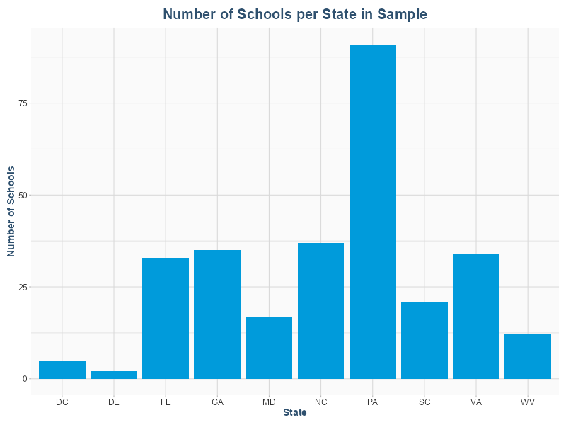
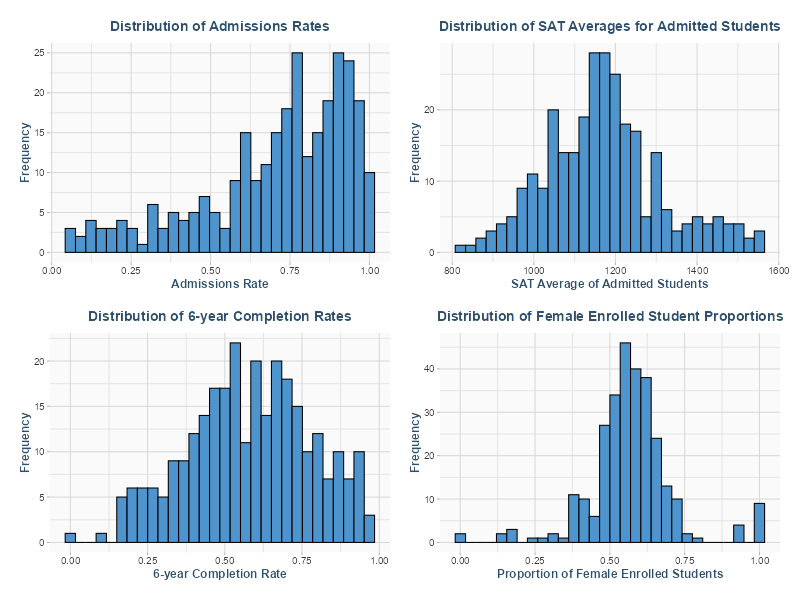
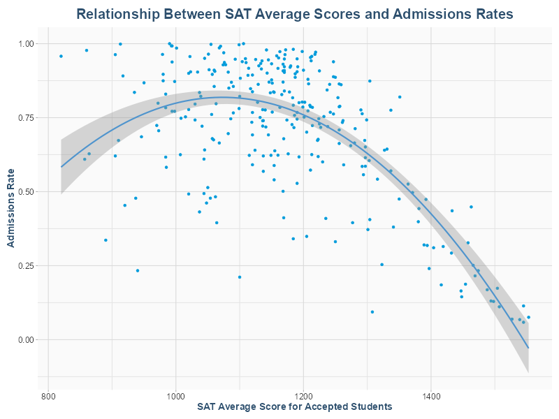
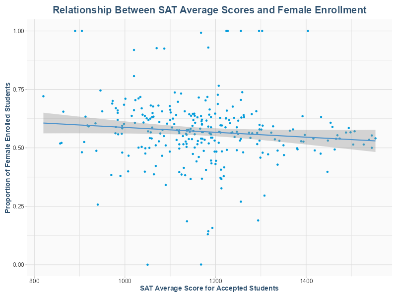
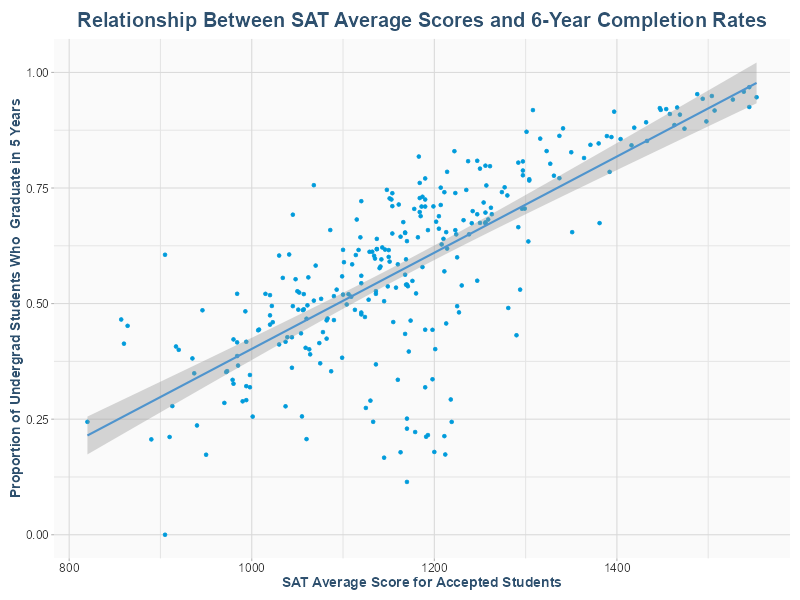
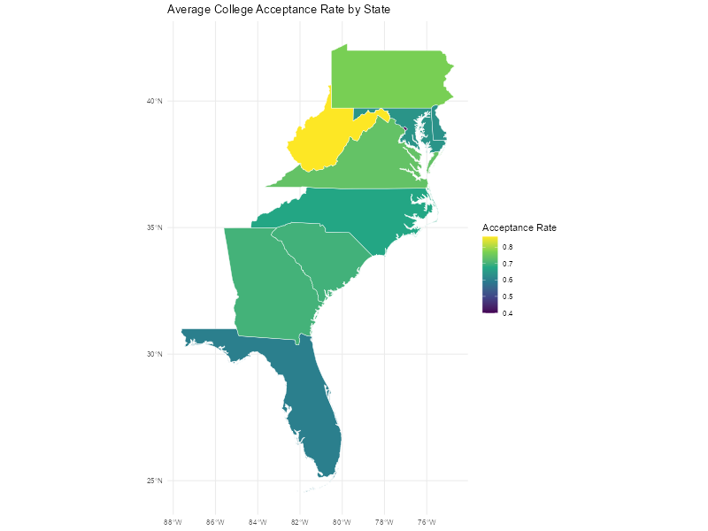
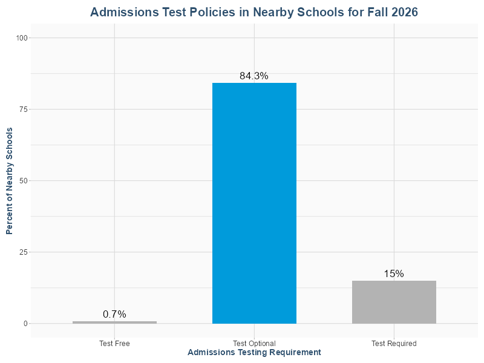

##install.packages('tidyverse')
library('tidyverse')
library(colorspace)
dark_steelblue <- darken("steelblue4", 0.2)
sat_blue <- '#009bdb'
# Modern polished theme
theme_eda_modern <- theme(
# Overall text
text = element_text(family = "Helvetica", color = "black"),
# Plot background
plot.background = element_rect(fill = "white", color = NA),
panel.background = element_rect(fill = "grey98", color = NA),
# Gridlines
panel.grid.major = element_line(color = "grey85"),
panel.grid.minor = element_line(color = "grey90"),
# Titles
plot.title = element_text(size = 20, face = "bold", color = dark_steelblue, hjust = 0.5, margin = margin(b = 10)),
plot.subtitle = element_text(size = 14, color = "grey30", hjust = 0.5, margin = margin(b = 10)),
# Axis
axis.title = element_text(size = 14, face = "bold", color = dark_steelblue),
axis.text = element_text(size = 12, color = "grey20"),
axis.ticks = element_line(color = "grey70"),
# Legend
legend.background = element_rect(fill = "grey98", color = NA),
legend.key = element_rect(fill = "grey98"),
legend.title = element_text(size = 14, face = "bold", color = dark_steelblue),
legend.text = element_text(size = 12, color = "grey20"),
legend.position = "top",
legend.key.size = unit(1.2, "lines"),
# Facets
strip.background = element_rect(fill = "steelblue3", color = NA),
strip.text = element_text(size = 14, face = "bold", color = "white"),
# Margins
plot.margin = margin(10, 10, 10, 10)
)
# Apply globally
theme_set(theme_eda_modern)Data Cleaning for Homework 1
This Jupyter Notebook contains all the information for cleaning and processing the data for the website report. The technical information about sourcing and preprocessing will be in this Notebook, and not in the official report content page. This project uses R primarily, through the Tidyverse package.
## Loading the data
admin_df <- read_csv("Most-Recent-Cohorts-Institution.csv")Rows: 6429 Columns: 3306 ── Column specification ──────────────────────────────────────────────────────── Delimiter: "," chr (2380): OPEID, OPEID6, INSTNM, CITY, STABBR, ZIP, ACCREDAGENCY, INSTURL,... dbl (851): UNITID, SCH_DEG, HCM2, MAIN, NUMBRANCH, PREDDEG, HIGHDEG, CONTRO... lgl (75): LOCALE2, UG, UGDS_WHITENH, UGDS_BLACKNH, UGDS_API, UGDS_AIANOLD,... ℹ Use `spec()` to retrieve the full column specification for this data. ℹ Specify the column types or set `show_col_types = FALSE` to quiet this message.
First I will do an initial filtering and cleaning of the dataset. I want to specify the states and columns the project could be based off of. We also need to make sure that I have at least 200 usable schools.
## selecting the states I want
states <- c('DC','DE','FL','GA','MD','NC','PA','SC','VA','WV')
cleaning <- admin_df |> filter(STABBR %in% states)
## and making sure we have values in the admissions rate column
cleaning <- cleaning |> filter(!is.na(ADM_RATE))
#there are 3306 columns, we do not need that many.
#Unit ID for the university, institution name, city, state, zip code, highest degree awarded,
# fips code for state, lat and long coordinates, locale of institution (city, rural),
# admission rate,
# SAT midpoints for critical thinking, reading, and writing, and average total
# ACT midpoints for english, math, and writing, and the midpoint cumulative score,
# Completion rate for first-time, full-time students at four-year institutions (150% of expected time to completion)
# total share of undergrad enrollment who are men, and women, number of grad students
#number of programs offered
columns_to_select <- c('UNITID','INSTNM','CITY','STABBR','ZIP','HIGHDEG',
'ST_FIPS','LATITUDE','LONGITUDE','LOCALE','ADM_RATE','SATVRMID',
'SATMTMID','SATWRMID','SAT_AVG', 'ACTCMMID','ACTENMID', 'ACTMTMID','ACTWRMID','C150_4',
'UGDS_MEN', 'UGDS_WOMEN','GRADS','PRGMOFR')
cleaning <- cleaning |> select(columns_to_select)
print("Retained Columns:")
print(colnames(cleaning))
print(paste("Number of Schools:", nrow(cleaning)))
print("Columns with Missing Values: ")
colSums(is.na(cleaning))[1] "Retained Columns:"
[1] "UNITID" "INSTNM" "CITY" "STABBR" "ZIP"
[6] "HIGHDEG" "ST_FIPS" "LATITUDE" "LONGITUDE" "LOCALE"
[11] "ADM_RATE" "SATVRMID" "SATMTMID" "SATWRMID" "SAT_AVG"
[16] "ACTCMMID" "ACTENMID" "ACTMTMID" "ACTWRMID" "C150_4"
[21] "UGDS_MEN" "UGDS_WOMEN" "GRADS" "PRGMOFR"
[1] "Number of Schools: 486"
[1] "Columns with Missing Values: " UNITID INSTNM CITY STABBR ZIP HIGHDEG ST_FIPS
0 0 0 0 0 0 0
LATITUDE LONGITUDE LOCALE ADM_RATE SATVRMID SATMTMID SATWRMID
0 0 0 0 233 233 272
SAT_AVG ACTCMMID ACTENMID ACTMTMID ACTWRMID C150_4 UGDS_MEN
194 244 258 259 396 77 0
UGDS_WOMEN GRADS PRGMOFR
0 146 450 We need to have SAT_AVG scores for every school in my small study, so we are going to drop all of the rows that have a ‘NA’ in that column, and the NA’s in the Completed in 4 years column. I also see that almost no schools have the ACTWRMID or PRGMOFR column, so lets get rid of those. Because I don’t have a conversion for the SAT to ACT, I’m also going to drop the ACT columns and extra SAT columns.
cleaning <- cleaning |> drop_na(SAT_AVG) |> drop_na(C150_4) |> select(-PRGMOFR, -ACTWRMID, -SATVRMID, -SATMTMID, -SATWRMID, -ACTENMID, -ACTMTMID,-ACTCMMID,-GRADS)
print(paste("Number of Schools:", nrow(cleaning)))
print("Columns with Missing Values: ")
colSums(is.na(cleaning))[1] "Number of Schools: 287"
[1] "Columns with Missing Values: " UNITID INSTNM CITY STABBR ZIP HIGHDEG ST_FIPS
0 0 0 0 0 0 0
LATITUDE LONGITUDE LOCALE ADM_RATE SAT_AVG C150_4 UGDS_MEN
0 0 0 0 0 0 0
UGDS_WOMEN
0 This leaves us a clean dataset with unique identifiers and location data for all 287 schools on the list. We also have the admission rates, the average SAT score of applicants, the completion rate for first-time, full-time students at four-year institutions (150% of expected time to completion), and the total share of undergrad enrollment who are men, and who are women. We should be able to make a pretty sophisticated report with this information. Lets save our updated CSV before we do any more exploration.
write_csv(cleaning, "cleaned_admin_df.csv")Now that we have our clean dataset, we can start with some basic visualizations to make sure we have a proportional dataset
admin_df <- read_csv("cleaned_admin_df.csv")
ggplot(admin_df, aes(x=STABBR)) +
geom_bar(stat = "count", fill=sat_blue) + labs(
title = "Number of Schools per State in Sample",
x="State",
y="Number of Schools"
)Rows: 287 Columns: 15 ── Column specification ──────────────────────────────────────────────────────── Delimiter: "," chr (4): INSTNM, CITY, STABBR, ZIP dbl (11): UNITID, HIGHDEG, ST_FIPS, LATITUDE, LONGITUDE, LOCALE, ADM_RATE, S... ℹ Use `spec()` to retrieve the full column specification for this data. ℹ Specify the column types or set `show_col_types = FALSE` to quiet this message.

Pennsylvania has a lot more data than the others, so lets see if it’s a lot of schools, or many campuses under one school.
print(admin_df$INSTNM[admin_df$STABBR == "PA"]) [1] "Bryn Athyn College of the New Church"
[2] "Allegheny College"
[3] "DeSales University"
[4] "Alvernia University"
[5] "Arcadia University"
[6] "Bryn Mawr College"
[7] "Bucknell University"
[8] "Cabrini University"
[9] "Carnegie Mellon University"
[10] "Cedar Crest College"
[11] "Chatham University"
[12] "Delaware Valley University"
[13] "Drexel University"
[14] "Duquesne University"
[15] "East Stroudsburg University of Pennsylvania"
[16] "Elizabethtown College"
[17] "Franklin and Marshall College"
[18] "Gettysburg College"
[19] "Grove City College"
[20] "Gwynedd Mercy University"
[21] "Haverford College"
[22] "Holy Family University"
[23] "Immaculata University"
[24] "Indiana University of Pennsylvania-Main Campus"
[25] "Juniata College"
[26] "Keystone College"
[27] "King's College"
[28] "Kutztown University of Pennsylvania"
[29] "La Roche University"
[30] "Lafayette College"
[31] "Lancaster Bible College"
[32] "Lebanon Valley College"
[33] "Lehigh University"
[34] "Lincoln University"
[35] "Lycoming College"
[36] "Manor College"
[37] "Marywood University"
[38] "Messiah University"
[39] "Millersville University of Pennsylvania"
[40] "Moore College of Art and Design"
[41] "Moravian University"
[42] "Mount Aloysius College"
[43] "Muhlenberg College"
[44] "Pennsylvania State University-Penn State Erie-Behrend College"
[45] "Pennsylvania State University-Penn State New Kensington"
[46] "Pennsylvania State University-Penn State Shenango"
[47] "Pennsylvania State University-Penn State Wilkes-Barre"
[48] "Pennsylvania State University-Penn State Scranton"
[49] "Pennsylvania State University-Penn State Lehigh Valley"
[50] "Pennsylvania State University-Penn State Altoona"
[51] "Pennsylvania State University-Penn State Beaver"
[52] "Pennsylvania State University-Penn State Berks"
[53] "Pennsylvania State University-Penn State Harrisburg"
[54] "Pennsylvania State University-Penn State Brandywine"
[55] "Pennsylvania State University-Penn State DuBois"
[56] "Pennsylvania State University-Penn State Fayette- Eberly"
[57] "Pennsylvania State University-Penn State Hazleton"
[58] "Pennsylvania State University-Main Campus"
[59] "Pennsylvania State University-Penn State Greater Allegheny"
[60] "Pennsylvania State University-Penn State Mont Alto"
[61] "Pennsylvania State University-Penn State Abington"
[62] "Pennsylvania State University-Penn State Schuylkill"
[63] "Pennsylvania State University-Penn State York"
[64] "University of Pennsylvania"
[65] "Cairn University-Langhorne"
[66] "University of Pittsburgh-Bradford"
[67] "University of Pittsburgh-Greensburg"
[68] "University of Pittsburgh-Johnstown"
[69] "University of Pittsburgh-Pittsburgh Campus"
[70] "Point Park University"
[71] "Saint Francis University"
[72] "Saint Joseph's University - Philadelphia"
[73] "Saint Vincent College"
[74] "University of Scranton"
[75] "Seton Hill University"
[76] "Shippensburg University of Pennsylvania"
[77] "Slippery Rock University of Pennsylvania"
[78] "Susquehanna University"
[79] "Swarthmore College"
[80] "Thomas Jefferson University"
[81] "Ursinus College"
[82] "Villanova University"
[83] "Waynesburg University"
[84] "West Chester University of Pennsylvania"
[85] "Widener University"
[86] "Wilkes University"
[87] "Wilson College"
[88] "York College of Pennsylvania"
[89] "Pennsylvania State University-World Campus"
[90] "Commonwealth University of Pennsylvania"
[91] "Pennsylvania Western University" Penn State has about 20 separate schools, each of which has its own statistics in the dataset. We have a few options. We could include these as-are, we could only count the main campus, or we could aggregate all of the statistics to an average of all the campuses. Most other states have about 20-30 schools, excluding DC and Delaware, which are both tiny.
Penn State’s various campuses seem to have different focuses, admission rates, and demographics of applicants, so we should probably keep all of them if we are going to compare admissions rates and school acceptances. Now lets look at the spread of our admission rates, SAT scores, proportions of men and women, and completion rates.
#distribution of admissions rates
p1 <- ggplot(admin_df, aes(x = ADM_RATE)) +
geom_histogram(fill="steelblue3", col="black") +
labs(title = "Distribution of Admissions Rates",
x= "Admissions Rate",
y = "Frequency") +
theme(
plot.title = element_text(size = 14, face = "bold"),
axis.title = element_text(size = 12, face = "bold"),
axis.text = element_text(size = 10)
)
#distribution of SAT scores
p2 <- ggplot(admin_df, aes(x = SAT_AVG)) +
geom_histogram(fill="steelblue3", col="black") +
labs(title = "Distribution of SAT Averages for Admitted Students",
x= "SAT Average of Admitted Students",
y = "Frequency") +
theme(
plot.title = element_text(size = 14, face = "bold"),
axis.title = element_text(size = 12, face = "bold"),
axis.text = element_text(size = 10)
)
#distribution of completion rates
p3 <- ggplot(admin_df, aes(x = C150_4)) +
geom_histogram(fill="steelblue3", col="black") +
labs(title = "Distribution of 6-year Completion Rates",
x= "6-year Completion Rate",
y = "Frequency") +
theme(
plot.title = element_text(size = 14, face = "bold"),
axis.title = element_text(size = 12, face = "bold"),
axis.text = element_text(size = 10)
)
# proportion of women (which is the inverse of the proportion of men)
p4 <- ggplot(admin_df, aes(x = UGDS_WOMEN)) +
geom_histogram(fill="steelblue3", col="black") +
labs(title = "Distribution of Female Enrolled Student Proportions",
x= "Proportion of Female Enrolled Students",
y = "Frequency") +
theme(
plot.title = element_text(size = 14, face = "bold"),
axis.title = element_text(size = 12, face = "bold"),
axis.text = element_text(size = 10)
)
# combine and display plots
#install.packages("patchwork")
library('patchwork')
combined_plot <- (p1 + p2) / (p3 + p4)
# Print the combined plot
print(combined_plot)
#this would probably look better in python, but I think the website will use some plotly stuff if we can figure it out`stat_bin()` using `bins = 30`. Pick better value `binwidth`. `stat_bin()` using `bins = 30`. Pick better value `binwidth`. `stat_bin()` using `bins = 30`. Pick better value `binwidth`. `stat_bin()` using `bins = 30`. Pick better value `binwidth`.

I want to look at whether there is any correlation between SAT scores and admissions rates, and the proportion of female enrolled students. Then I want to see if either of those are at all related to the 6 year completion rate, and hopefully provide a recommendation whether to maintain or remove SAT test requirements.
We need to find out if high admissions rates are correlated with low SAT scores, and if low admissions rates are correlated with high SAT scores. (This seems obvious, but we should establish it)
Alright, lets see if admissoins rates are correlated with SAT scores. We will start with some statistical analysis
ggplot(admin_df, aes(x = SAT_AVG, y = ADM_RATE)) +
geom_point(col=sat_blue) +
labs(title = "Relationship Between SAT Average Scores and Admissions Rates",
x= "SAT Average Score for Accepted Students",
y = "Admissions Rate")+
geom_smooth(
method = "lm",
formula = y ~ x + I(x^2),
se = TRUE, col = 'steelblue3'
)
correlation <- cor(admin_df$SAT_AVG, admin_df$ADM_RATE, method = 'pearson')
correlation[1] -0.5716748From this we see a moderate negative correlation. More selective schools (those with lower admissions rates) offer admission to students who have higher SAT scores. A large proportion of schools have higher accceptance rates, and accept more moderate SAT scores. Basically, fancy schools care, but the rest all hover around the same area.
Now lets see if SAT score has anything to do with the number of women enrolled
correlation <- cor(admin_df$SAT_AVG, admin_df$UGDS_WOMEN, method = 'pearson')
print(correlation)
ggplot(admin_df, aes(x = SAT_AVG, y = UGDS_WOMEN)) +
geom_point(col=sat_blue) +
labs(title = "Relationship Between SAT Average Scores and Female Enrollment",
x= "SAT Average Score for Accepted Students",
y = "Proportion of Female Enrolled Students")+
geom_smooth(
method = "lm", col = 'steelblue3'
)
[1] -0.1036536
`geom_smooth()` using formula = 'y ~ x'
There appears to be no relationship. Now lets try completion rates
correlation <- cor(admin_df$SAT_AVG, admin_df$C150_4, method = 'pearson')
print(correlation)
ggplot(admin_df, aes(x = SAT_AVG, y = C150_4)) +
geom_point(col=sat_blue) +
labs(title = "Relationship Between SAT Average Scores and 6-Year Completion Rates",
x= "SAT Average Score for Accepted Students",
y = "Proportion of Undergrad Students Who Graduate in 5 Years")+
geom_smooth(
method = "lm", col = 'steelblue3'
)
[1] 0.7464987
`geom_smooth()` using formula = 'y ~ x'
Ahhh, so SAT may predict whether students will graduate within 6 years, with a 0.74 correlation coefficient. Lets try with a real statistical test via linear regression
model <- lm(C150_4 ~ SAT_AVG, data = admin_df)
summary(model)
Call:
lm(formula = C150_4 ~ SAT_AVG, data = admin_df)
Residuals:
Min 1Q Median 3Q Max
-0.46453 -0.04305 0.02926 0.07640 0.30244
Coefficients:
Estimate Std. Error t value Pr(>|t|)
(Intercept) -6.383e-01 6.479e-02 -9.852 <2e-16 ***
SAT_AVG 1.040e-03 5.493e-05 18.940 <2e-16 ***
---
Signif. codes: 0 ‘***’ 0.001 ‘**’ 0.01 ‘*’ 0.05 ‘.’ 0.1 ‘ ’ 1
Residual standard error: 0.133 on 285 degrees of freedom
Multiple R-squared: 0.5573, Adjusted R-squared: 0.5557
F-statistic: 358.7 on 1 and 285 DF, p-value: < 2.2e-16scaling for interpretability
admin_df$SAT_z <- scale(admin_df$SAT_AVG)
model_z <- lm(C150_4 ~ SAT_z, data = admin_df)
summary(model_z)
Call:
lm(formula = C150_4 ~ SAT_z, data = admin_df)
Residuals:
Min 1Q Median 3Q Max
-0.46453 -0.04305 0.02926 0.07640 0.30244
Coefficients:
Estimate Std. Error t value Pr(>|t|)
(Intercept) 0.579740 0.007853 73.82 <2e-16 ***
SAT_z 0.148996 0.007867 18.94 <2e-16 ***
---
Signif. codes: 0 ‘***’ 0.001 ‘**’ 0.01 ‘*’ 0.05 ‘.’ 0.1 ‘ ’ 1
Residual standard error: 0.133 on 285 degrees of freedom
Multiple R-squared: 0.5573, Adjusted R-squared: 0.5557
F-statistic: 358.7 on 1 and 285 DF, p-value: < 2.2e-16When SAT scores are standardized, a one–standard deviation increase in a school’s average SAT score is associated with an approximately 15 percentage-point increase in six-year completion rates (p < 0.001). One standard deviation is about 150 SAT score points.
Let’s try making a choropleth map of the admissions rates
library(sf)
library(dplyr)
library(mapview)
library(rnaturalearth)
library(rnaturalearthdata)#install.packages("rnaturalearthhires",
#repos = "https://ropensci.r-universe.dev")
states_sf <- ne_states(
country = "United States of America",
returnclass = "sf"
)
states_sf <- states_sf |>
filter(postal %in% states)#joining the states data
admin_state <- admin_df |>
filter(!is.na(ADM_RATE), !is.na(STABBR)) |>
group_by(STABBR) |>
summarise(
avg_adm_rate = mean(ADM_RATE, na.rm = TRUE),
n_schools = n(),
.groups = "drop"
)
states_map <- states_sf |>
left_join(admin_state, by = c("postal" = "STABBR")) |>
select(postal, avg_adm_rate, geometry)ggplot(states_map) +
geom_sf(aes(fill = avg_adm_rate), color = "white", linewidth = 0.2) +
scale_fill_viridis_c(name = "Acceptance Rate") +
theme_minimal() +
labs(
title = "Average College Admission Rates by State"
)
That makes me happy, but we’re not going to actually use it in the report, unfortunately
Lets see which schools appear on the test-free and test-optional list in 2026! https://fairtest.org/test-optional-list/
# lets load that csv
tests_df <- read_csv("testoptionallist.csv")
tests_df <- tests_df |> filter(State %in% states)
institutions <- admin_df$INSTNM
tests_df <- tests_df |> filter(Institution_Name %in% institutions)
tests_df <- tests_df |> select(-Policy_Details, -Link_to_policy, -Control_of_institution)
head(tests_df)Rows: 2089 Columns: 8 ── Column specification ──────────────────────────────────────────────────────── Delimiter: "," chr (7): Institution_Name, State, Policy_2026, Is_policy_temporary, Link_to_... num (1): Policy_Details ℹ Use `spec()` to retrieve the full column specification for this data. ℹ Specify the column types or set `show_col_types = FALSE` to quiet this message.
# A tibble: 6 × 5 Institution_Name State Policy_2026 Is_policy_temporary Pct_enroll_no_scores <chr> <chr> <chr> <chr> <chr> 1 Abraham Baldwin Ag… GA Test Optio… Yes 37% 2 Agnes Scott College GA Test Optio… No 44% 3 Allegheny College PA Test Optio… No 68% 4 Alvernia University PA Test Optio… Yes 92% 5 American University DC Test Optio… No 58% 6 Anderson University SC Test Optio… Unannounced 100%
That dataset shows the schools that have test optional policies for students applying for Fall 2026. That is the majority of our list! Now we need to join this back to the other dataset and fill in the missing values
admin_test_df <- admin_df |>
left_join(
tests_df,
by = c("INSTNM" = "Institution_Name")
) |> select(-State)
admin_test_df <- admin_test_df |>
mutate(
Policy_2026 = replace_na(Policy_2026, "Test Required")
)
admin_test_df <- admin_test_df |>
mutate(
Pct_enroll_no_scores = as.numeric(gsub("%", "", Pct_enroll_no_scores)) / 100
) |>
mutate(
Pct_enroll_no_scores = replace_na(Pct_enroll_no_scores, 0)
) |>
mutate(
Is_policy_temporary = replace_na(Is_policy_temporary, "No")
)
write_csv(admin_test_df, "admin_test_full.csv")
colnames(admin_test_df) [1] "UNITID" "INSTNM" "CITY"
[4] "STABBR" "ZIP" "HIGHDEG"
[7] "ST_FIPS" "LATITUDE" "LONGITUDE"
[10] "LOCALE" "ADM_RATE" "SAT_AVG"
[13] "C150_4" "UGDS_MEN" "UGDS_WOMEN"
[16] "Policy_2026" "Is_policy_temporary" "Pct_enroll_no_scores"df_counts <- admin_test_df |>
count(Policy_2026) |>
mutate(pct = n / sum(n) * 100)
ggplot(df_counts, aes(x = Policy_2026, y = pct, fill = Policy_2026 == "Test Optional")) +
geom_bar(stat = "identity", width=0.6) +
geom_text(aes(label = paste0(round(pct, 1), "%")),
vjust = -0.5, size = 6) +
scale_fill_manual(values = c("FALSE" = "grey70", "TRUE" = sat_blue),
guide = "none") +
labs(
title = "Admissions Test Policies in Nearby Schools for Fall 2026",
x = "Admissions Testing Requirement",
y = "Percent of Nearby Schools"
) +
ylim(0, 100)
#testing plotly charts
# install.packages("plotly")
library(plotly)
#fitting a linear model
lm_fit <- lm(C150_4 ~ SAT_AVG, data = admin_df)
# Predict values along the range of SAT_AVG
sat_range <- seq(min(admin_df$SAT_AVG, na.rm = TRUE),
max(admin_df$SAT_AVG, na.rm = TRUE),
length.out = 100)
pred_df <- data.frame(
SAT_AVG = sat_range,
C150_4 = predict(lm_fit, newdata = data.frame(SAT_AVG = sat_range))
)
fig <- plot_ly(admin_df,
x = ~SAT_AVG, y = ~C150_4,
type = 'scatter', mode = 'markers',
marker = list(color = sat_blue),
name = 'Schools') %>%
add_trace(data = pred_df,
x = ~SAT_AVG, y = ~C150_4,
type = 'scatter', mode = 'lines',
line = list(color = 'steelblue3', width = 2),
name = 'Linear Trend') %>%
layout(title = list(text = "Relationship Between SAT Average Scores and 6-Year Completion Rates",
font = list(size = 16)),
xaxis = list(title = "SAT Average Score for Accepted Students"),
yaxis = list(title = "Proportion of Undergrad Students Who Graduate in 6 Years",
tickformat = "%"))